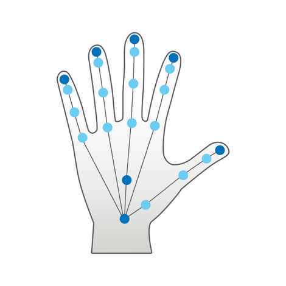
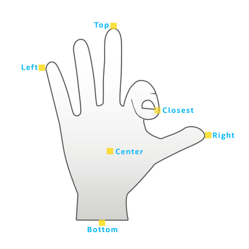

Tracking Modes |
Top Previous Next |
|
You can configure the hand module to work in one of the following tracking modes:
 Figure 28: Full Hand Tracking Mode
 Figure 29: Extremity Tracking Mode Use the full-hand tracking mode when you need to access to specific skeletal information. Use the extremities tracking mode when you only need to access the entire hand location. The extremities mode conserves resources such as CPU, power, computation threads and memory. The following types of data are available only when in full-hand tracking mode:
See SetTrackingMode.
|